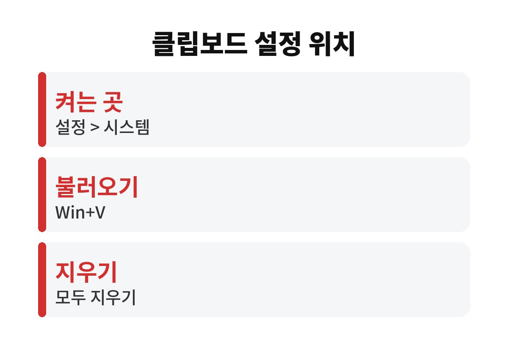
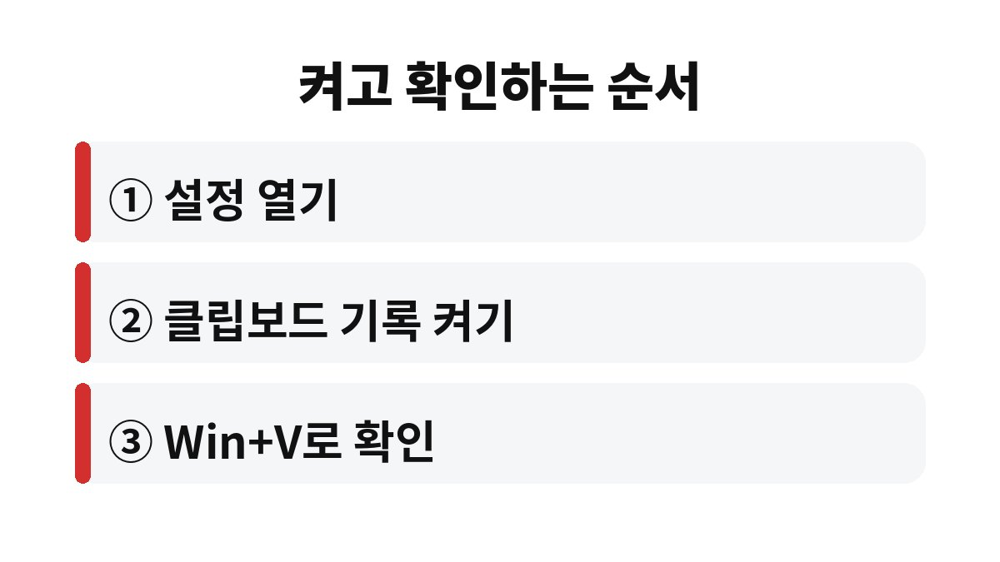

윈도우11 클립보드 기록은 설정 > 시스템 > 클립보드에서 스위치를 켜 두면 Windows 로고 키와 V를 함께 눌러 이전에 복사한 내용을 다시 꺼내 쓸 수 있다.
기본 상태에서는 새로 복사하는 순간 직전 내용이 사라진다.
기록을 켜면 최근에 복사한 문장과 이미지가 목록으로 남아서 문서 두 개를 오가며 작업할 때 손이 훨씬 덜 간다.
기록이 꺼진 PC에서 Windows 로고 키와 V를 누르면 클립보드 기록을 켜라는 작은 창이 뜬다.
여기서 켜기 버튼을 눌러도 되고, 설정 앱에서 직접 켜도 결과는 같다.
설정 앱은 Windows 로고 키와 I를 눌러 연다.
시스템 메뉴 안의 클립보드 화면에는 스위치가 몇 개 있다.
처음 쓰는 사람은 맨 위의 클립보드 기록만 켜면 된다.
아래 표에 항목별 위치를 적었다.
| 항목 | 위치 | 하는 일 |
|---|---|---|
| 클립보드 기록 | 설정 > 시스템 > 클립보드 | 복사한 항목을 목록으로 보관 |
| 장치 간 클립보드 | 같은 화면 | Microsoft 계정으로 로그인한 PC끼리 공유 |
| 지우기 | 같은 화면 또는 Win+V 창 | 보관한 항목을 한꺼번에 삭제 |

장치 간 클립보드는 같은 Microsoft 계정으로 로그인한 PC끼리 복사한 내용을 주고받는 기능이다.
집 데스크톱과 노트북을 함께 쓰는 사람에게는 편하지만 회사 PC와 개인 PC를 섞어 쓴다면 켜지 않는 편이 낫다.
업무 문서의 일부가 개인 PC로 넘어갈 수 있기 때문이다.

Win+V 창에는 복사한 문장이 위에서부터 최신 순서로 쌓인다.
화면 캡처 같은 이미지도 목록에 들어오지만 아주 큰 이미지는 보관되지 않을 수 있다.
엑셀 칸이나 웹 문서를 복사했을 때는 서식이 함께 담겨서 붙여 넣는 자리에 따라 모양이 달라진다.
서식 없이 글자만 필요하면 Win+V 창에서 항목 위에 마우스를 올리고 서식 없이 붙여넣기 쪽을 고른다.
메일 본문에 웹 글을 옮길 때 글꼴이 제멋대로 바뀌는 문제가 이것으로 대부분 해결된다.
목록이 길어지면 오래된 항목은 알아서 밀려난다.
보고서를 쓰다가 앞 페이지에서 복사해 둔 표 제목 세 개를 차례로 옮겨야 하는 장면을 생각하면 된다.
예전에는 앞뒤 창을 세 번 왔다 갔다 해야 했지만 기록이 켜져 있으면 한 번 복사해 모아 두고 뒤에서 골라 붙이면 끝난다.
클립보드 기록은 편리한 만큼 복사한 내용이 목록에 그대로 남는다는 뜻이기도 하다.
은행 인증번호나 비밀번호를 복사했다면 Win+V 창에서 해당 항목을 지우거나 모두 지우기를 누른다.
여럿이 같이 쓰는 PC에서는 아예 꺼 두는 쪽이 낫다.
항목 오른쪽의 핀 모양을 누르면 고정되어 모두 지우기를 눌러도 남는다.
메일 서명이나 자주 붙여 넣는 주소처럼 매번 치기 번거로운 문장에 쓸 만하다.
PC를 다시 시작하면 고정하지 않은 항목은 사라진다는 점은 알아 둔다.
스위치를 켰는데도 Win+V가 반응이 없다면 노트북 키 조합이 기능키와 겹친 경우가 많다.
그럴 때는 Fn 키를 함께 눌러 보거나 설정 앱에서 켜져 있는지부터 다시 본다.
회사에서 받은 PC는 관리자가 막아 둔 경우도 있어서 설정 스위치가 회색으로 잠겨 있으면 담당 부서에 묻는 것이 빠르다.
윈도우10에도 같은 기능이 있어서 화면 구성만 조금 다를 뿐 Win+V 조합은 그대로 쓸 수 있다.
클립보드 기록은 켜 두기만 해도 복사와 붙여넣기 횟수가 눈에 띄게 줄어드는 설정이다.
다음에는 자주 쓰는 문장 두세 개만 핀으로 고정해 두고 하루 동안 써 보면 필요한지 판단이 선다.
공용 PC라면 사용을 마칠 때 목록을 지우는 습관부터 들인다.
참고 자료: Microsoft 지원 「Windows에서 클립보드 사용하기」(2026년 11월 확인)
※ 2026년 기준 공식 안내를 바탕으로 정리한 글이며, 기기·앱 버전에 따라 메뉴 이름이 다를 수 있다.